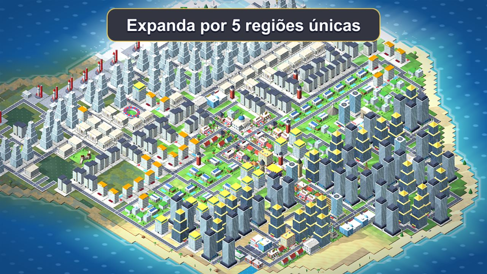

Sente falta dos clássicos de construir cidade? Conheça Money City
Por volta de 2010, milhões de pessoas jogavam jogos sociais de construir cidade no Facebook, como Millionaire City, CityVille e SimCity Social. Você construía uma cidadezinha, coletava moedas das suas casas, expandia seu terreno e decorava cada cantinho. Muitos desses jogos não estão mais disponíveis, mas é fácil lembrar a sensação que eles davam. Money City é um jogo novo e original, feito para quem sente falta desse estilo de jogo.
Construção simples, um momento gostoso toda vez que você coletava dinheiro e uma cidade que crescia aos poucos, de algumas casas até um horizonte cheio de arranha-céus. Dava para jogar dois minutos ou uma noite inteira, e sempre havia um motivo para voltar.
Como Money City traz isso de volta
Money City é um jogo aconchegante de construir cidade e de magnata para Android. Você constrói casas, assina contratos de aluguel de 1 minuto a 3 dias, coleta o aluguel com um toque e transforma um pequeno vilarejo em uma megacidade. Você compra novos terrenos em uma ilha com cinco regiões, melhora prédios até 5 estrelas, decora com parques e estátuas e constrói 10 maravilhas do mundo que aumentam sua renda.
O que é diferente hoje
Money City é single-player e funciona offline. Você não precisa de conta no Facebook, de amigos para mandar pedidos nem de conexão com a internet. Os anúncios são opcionais: você só assiste a um quando quer um bônus. O jogo está disponível em 12 idiomas e abre no idioma do seu celular.
Assine contratos, receba aluguelConstrua 10 maravilhas do mundo

Expanda por 5 regiões únicas
Perguntas frequentes
Money City tem relação com Millionaire City, CityVille ou SimCity Social?
Não. Money City é um jogo original feito por um desenvolvedor independente. Ele não é afiliado, endossado nem ligado a esses jogos ou aos seus donos.
Money City é parecido com os clássicos de construir cidade do Facebook?
Ele compartilha a mesma ideia relaxante de construir uma cidade e coletar aluguel dos seus prédios, com recursos modernos de celular como jogo offline, contratos de aluguel, cinco regiões e maravilhas do mundo.
Preciso de Facebook ou de amigos para jogar Money City?
Não. Money City é um jogo single-player. Você pode jogar sozinho e offline.
Onde posso jogar Money City?
Money City está disponível para Android no Google Play.
Millionaire City, CityVille e SimCity Social são marcas registradas de seus respectivos donos. Eles são mencionados apenas para descrever um estilo de jogo. Money City não é afiliado a esses jogos ou aos seus donos, nem endossado por eles.